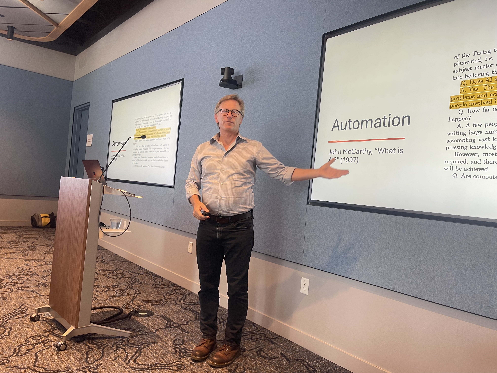
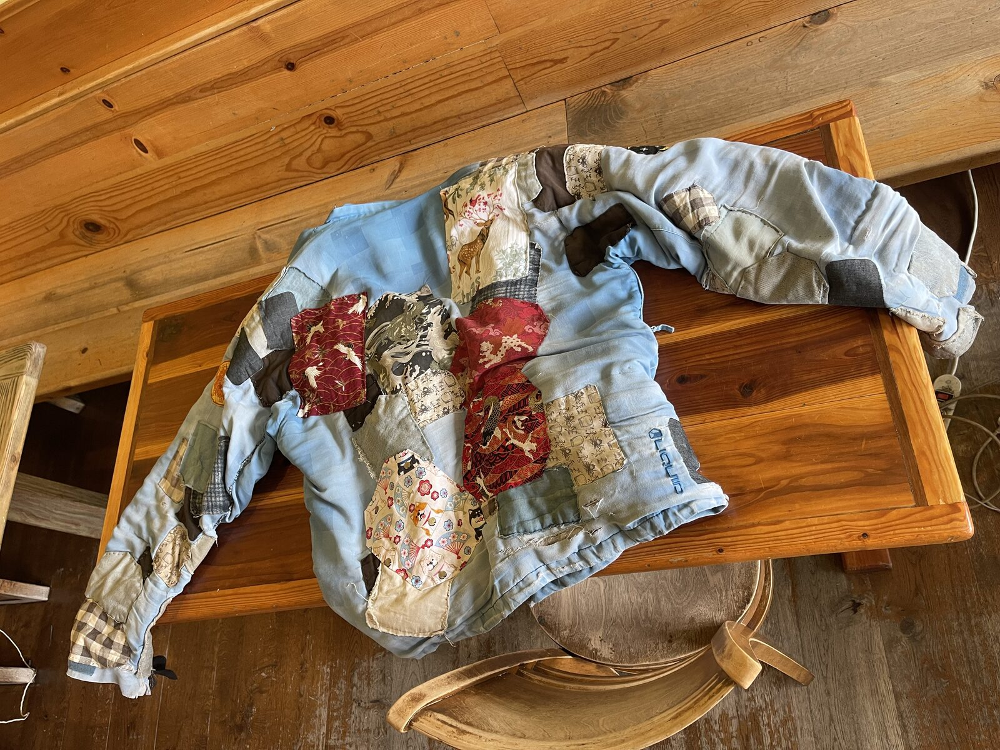

Field Signals is a TrueSight DAO series where long time contributors share first-person observations from the network — what they're seeing in the field, the kinds of pattern shifts that don't yet show up in dashboards but are starting to show up at the wharf, the library, the borderlands. Each piece is in the contributor's own voice. This first one is from Gary.

Sunday evening at Fisherman's Wharf and the retail strip is dark. Curio shops, t-shirt vendors, chocolate stores — all closed by 6 PM, signs dim, doors locked. The dock, on the other hand, is alive. A crowd is gathered around the fishing boats, the air thick with seawater and fryer oil, people clustered shoulder to shoulder waiting their turn for a ride out into the bay. Same square footage. One half is dead. The other is throbbing.
That contrast has been on my mind for months, and a series of conversations this past week — with Kirsten Ritschel, June Jo, and Philip Lee — gave it a shape I hadn't quite seen before.
Libraries that pay for experiences

June makes bibimbap at the local library. She doesn't lecture about Korean cuisine. She doesn't slide-deck about food culture. She just brings the rice and the gochujang and the vegetables and her hands, and people come. The library pays her. The library pays for the experience to be made available to its community. And the model is working well enough that she's now touring it nationally — the same workshop, library by library, city by city.
This is not what libraries used to do. A library was a place that had books. It loaned them. The reason for the library was the book.
Now most libraries publish event calendars — kimchi nights, repair cafés, mending circles, sourdough workshops, language exchanges, teen craft hours — and the books almost feel like the residual function. The library has quietly redefined itself from a building full of books into a place where people gather around something real, often something ephemeral, often something a single human is holding space for. The book is still there but it is no longer the WHY.
This is the reframe I keep coming back to: a book is a medium. The WHY of the book might be to educate, to offer an experience, to express beauty. The library that mistakes the book for the WHY is a library that loses its meaning the moment that same WHY can be delivered through a screen, an audiobook, a podcast, a kimchi night. The library that understands the WHY is the library that survives — and what we're seeing in 2026 is that the libraries that survive are the ones that started paying for experiences.
The book salesman who never died
Philip pointed something out to me that I haven't been able to stop thinking about. The professional book seller — the door-to-door salesman who calls on bookstores and libraries — is mostly old men now. It's a dying trade. Amazon decimated it, of course. But it never quite ended. There's still a person in a beat-up car driving between county libraries with a trunk full of titles and a relationship that goes back twenty years.
That's the residue of an old distribution network — older than Amazon, older than chain bookstores, older than catalog mail-order. The trader who carries a small enough load to be personal and a big enough load to be useful. The relationship is the asset.
I had to travel a long way to recognize what I was looking at.
The Silk Road never ended
Years ago I traveled the Silk Road overland — Sichuan, Xinjiang, Tibet, Kazakhstan, Turkey. What I saw repeatedly, in regions where formal modern trade had not fully colonized, was a distribution network that looked exactly like what Philip described. Small operators. Trusted relationships. Goods carried between regions of surplus and regions of scarcity by humans who knew both ends.
It is still happening — and not just along the Silk Road. The same pattern operates along the East African borderlands, especially where US sanctions and the SWIFT system have stifled formal trade — the Egypt–Sudan borders, the Sudan–Ethiopia borders. The same pattern between Venezuela and Brazil, where international trade in and out of Venezuela has been throttled for years. Anywhere formal trade has been choked by political force, the older trade reasserts itself.
Stepping back, it really does look like a human mycelium. A network of trusted small operators moving goods from regions of surplus into regions of scarcity, sustaining populations under externally-imposed constraints. The mycelium doesn't care that there's no SWIFT clearance. It routes around the damage.
What's making the mycelium visible again — here

What's interesting is that this older trade — the one we never quite killed — is becoming visible here, inside the United States, in the heart of the system that supposedly displaced it.
The conditions piling up:
Amazon already decimated retail-of-objects a decade ago. The bookstores and curio shops never recovered. They held on by becoming partly experiential, partly tourist. The pandemic finished what was left.
Tariffs and trade ruptures. The Trump-era tariffs reshaped a lot of what could move at what cost. Now, with the Iran/USA tensions in the Strait of Hormuz, the international supply chain is stressed in a different and more acute way. Container traffic is slower and more expensive. Imported retail margin has nowhere left to hide.
The pandemic shifted demand. People came out of lockdown wanting something they could not get on a screen. They wanted presence. They wanted to be in a room with another human doing something real. That demand has not stopped going up.
AI dropped the cost of unique experiences. The back end of running a kimchi night — the recipe sheet, the marketing post, the registration form, the booking, the receipts, the follow-up email — used to be expensive enough that only big organizations could underwrite it. Now a single human can run their own micro-events at near-zero overhead.
The result, walking around right now: downtown Santa Cruz, downtown Oakland, downtown LA, parts of New Orleans, the wharf and parts of downtown SF — retail of objects is collapsing. Margin is gone. Storefronts are shutting. New Orleans has signs in windows saying No ICE and signs in windows saying For Sale on the same block. Commerce has been decimated and nobody is sure what's replacing it.
But experience is rising. Where the wharf retail is dead at 6 PM on a Sunday, the boat dock is full. Where the bookstore is empty, the library kimchi night has a waitlist. Where the chain café with its standardized vibe is losing its grip, the small unique room run by a single human is full.
Retail of objects is structurally tied to the international supply chain. Margin under tariff and shipping pressure has nowhere to hide. Experience, by contrast, is mostly tied to local human energy — and human energy runs on local food. It is much, much harder to disrupt.
Signals gaining momentum across the DAO
One of the things the DAO has turned out to be unexpectedly good at is sitting at the intersection of several distinct ecosystems at once — community libraries, the nomadic festival circuit, founder gatherings, supply-chain partners, the wider algorithmic culture — and surfacing what's moving through each of them. Each ecosystem generates a steady volume of activity. Pareto holds: a small minority of those signals carries most of the meaning. The ones below are what cleared that filter this past stretch.
From the wider culture. The kind of content the algorithm is rewarding right now points in one direction — tactile, hand-held, place-rooted skill:
Turning acorns into tortillas — a foraged staple processed by hand.
How to forage — re-learning what's edible in your immediate landscape.
How to make chocolate truffles — confection as ritual, not factory.
None of these skills are new. What is new is that they are now what the algorithm surfaces. The audience exists, and it is large.
From the nomadic circuit. The Skooliepalooza-style traveling community — schoolies, festival nomads, the people who built their lives around the road — has been a consistent source of signal. The full cacao-bean-to-hot-chocolate workflow being shared right now was filmed at Skooliepalooza. This is also the ecosystem with the strongest opinions about AI, which I'll come to in the next section.
From the library and community-workshop layer. June Jo is taking her bibimbap workshop on a national library tour — the next stop is the San Francisco Public Library on May 9. Same library-pays-for-experience pattern, now scaling out as a single human's roadshow rather than a one-off.
From the founder ecosystem. FounderHaus's FounderShip event drew enough resonance on its first run to merit a second annual edition. Founders are paying for time spent in a room with other founders — not for content that could just as easily be a podcast.
From our supply-chain partners. Val Lapidus and his team are brewing beer using cacao nibs and cacao molasses sourced from the farmers we support — the imported good is the substrate, the brew night is the experience. Sheila and Ketan are bringing holistic incense from India and showing how it threads into intentional daily life — the substance crosses the border, but the practice around it is what people are actually coming for.
The pattern keeps repeating across all five layers: the imported object is the substrate, the human-held practice around it is the value. Rice and gochujang at the library. Cacao bean at the brew night, or at Skooliepalooza. Incense stick at Sheila and Ketan's table. Founder time around a shared meal. The object is necessary but not sufficient. The experience is where the meaning lives — and, increasingly, where the margin lives too.
Where the anti-AI signal actually concentrates
It would be easy to read the experiential layer as broadly anti-AI, but that's not what the signal actually shows. The library workshop circuit, the founder gatherings, our supply-chain partners — most of those populations are AI-curious or AI-neutral. They are happy to use it for the back-office work as long as the human stays in the foreground.
The strong anti-AI signal sits in a more specific place: the nomadic / Skooliepalooza circuit. The schoolies, the festival nomads, the people who organized their entire lives around stepping out of the formal economy — for that community, AI reads as another arm of the system they already left.
But the ambient temperature outside that circuit is also colder than tech tends to assume. At the Stanford "AI and the Future of Work: Automation or Augmentation" meetup, Rob Reich shared a statistic that should give anyone in this industry pause: public approval of AI is currently polling lower than public approval of ICE. Given where ICE itself sits in 2026, that is a remarkable place for an entire industry to be.

Reich offered a normative framework that maps almost one-to-one onto what we are seeing in the field — a distinction between reasons to automate and reasons to augment:

Walking around town this past week, the billboards from the new wave of AI-flavored startups speak almost entirely from the automate column — time savings, efficiency, substituting machine labor for human labor. That is exactly the framing the nomadic circuit actively rejects, and exactly the framing the broader public is now polling against. The augment column — improved performance, retained human accountability, intrinsic satisfaction from work — is where the experiential layer's tolerance for AI actually lives. None of the automate-column messaging lands here, in any of the ecosystems we are watching.
Meanwhile the standardized chain stores — the ones that historically captured the unique-experience-curious demographic by approximation — are losing that demographic to the actual unique experience, the one with a real person holding the room.
So the thesis sharpens: can we boost the flourishing of these unique experiences by putting the humans front-and-center and using AI invisibly in the background to enable them — without participants ever realizing AI is in the loop? The answer doesn't have to be uniform across every ecosystem. In the library and founder layers, AI can probably be visible if it stays in the augment column. In the nomadic layer, it has to disappear entirely. The infrastructure work — the booking, the paperwork, the marketing copy, the inventory tracking, the receipt generation, the contract templates — is exactly what AI is good at. The discipline is calibrating how visible to make it, ecosystem by ecosystem.
The visible human in the room is the value. AI's place is to make that human's life cheap to run, not to compete with them.
Three paradoxes worth betting on
Structurally, what I think we are betting on:
Polanyi's paradox — we know more than we can tell. The tacit knowledge that lives in the kimchi-maker's hands or the cacao-circle holder's body is not going to be solved by more compute. As the easy stuff gets automated, the gap between what humans can do and what can be coded becomes more pronounced, not less.
Moravec's paradox — what's hard for humans is easy for machines, what's easy for humans is hard for machines. The shape of an experience economy is exactly the shape that machines are worst at. Holding presence in a room. Reading the energy. Adjusting the workshop in real time to who actually showed up. These do not get cheaper with more parameters.
Jevons' paradox — and this is the trap to avoid — efficiency increases consumption. A lot of AI-flavored startups are walking straight into this. They make a thing more efficient and end up generating more slop, not more value. They get gobbled up by the unsustainable economics of frontier model providers chasing their own efficiency gains. The goal is not to ride this curve. The goal is to bet on what it can't reach.
The Ship of Theseus on my back

I've been wearing the same jacket for years. The base of it I bought off Amazon — a commodity object, identical to thousands of others. But every time it rips I patch it with whatever materials are handy in whichever place I happen to be when the rip happens. Some patches are fabric scraps. Some are an old shirt that became a sleeve. Some are gifts. None of them match.
Walking around in it now, the response is bipolar. Older folks tend to cross the street. They read homeless, they read drug addict, they read trouble. Gen Z stops me on the sidewalk and asks where I bought it. When I say it was originally an Amazon jacket, they want to know which patches I made myself and which were given. They have an instinct, increasingly, for the difference between the commodity and the accumulated story — and a hunger for the latter that is showing up everywhere from the rise of mending circles to the second-coming of crochet to the kids actually wanting to learn to sew.
The honest answer about the jacket is that it is both. It is Ship of Theseus — every plank is being replaced over time, and at some point it is no longer the Amazon jacket and not yet a handmade jacket either. It is something in between. Each rip is a small pressure on the system that produces a small adaptation. Each patch is a piece of a place. The whole thing is now far more interesting than it was when it left the warehouse, because it has accumulated story.
That, I think, is the experience economy in physical form. Commodity origins are fine. Mass production can be the substrate. What matters is the rate at which the object — or the room, or the relationship, or the trade route — accumulates story per unit of contact with the world.
What an old trade looks like when it returns
Walking around the wharf on Sunday, watching the dock fill up while the retail dies, I keep coming back to: we have unintentionally reinvented something very old. The trader carrying a small load down the Silk Road. The book salesman in his beat-up car. The kimchi-maker holding a room at the library. The fisherman taking strangers out into the bay because that's the part of his work that cannot be Amazon-ed. The patched jacket that twenty-somethings stop me to ask about. None of these are new categories. They are the survivors.
What is new is that we have a tool — quietly, in the back room — that can make these survivors cheap to operate. If we use it without making it the show, the experiential layer can flourish in a way it never could when the back office cost real money.
That is the bet. The mycelium routes around damage. We are now in a stretch where damage is being inflicted on the formal supply chain at multiple ends — tariffs, sanctions, the strait, the pandemic aftershock, retail's slow-motion collapse — and the older trade is becoming visible again. The humans holding the rooms are the network. AI's place, if we get this right, is to keep the network's overhead near zero.
The book is the medium. The room is the medium. The jacket is the medium. What we are after is the WHY. And the WHY, as it turns out, was never about the book at all.
Colophon
Conversations with Kirsten Ritschel, June Jo, and Philip Lee informed this piece. The Stanford "AI and the Future of Work: Automation or Augmentation" meetup that Vibhua Mittal recommended over lunch with Manish and Ketan Katori sharpened the framing. Jevons' paradox surfaced in conversation with Sujit Nair. Polanyi's and Moravec's paradoxes I first encountered years ago in The Second Machine Age (Brynjolfsson & McAfee) and The AI Economy (Roger Bootle). Where my thinking felt under-tested, I bounced it across Claude, Copilot, and Gemini — and the framing the three AIs surfaced triangulated cleanly with what June and Philip had said the night before, which is part of why I'm sharing it.